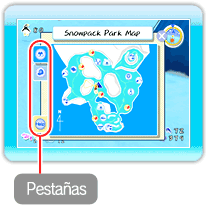
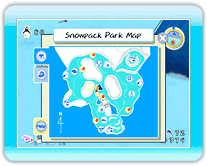
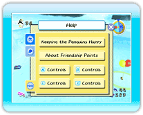

15 |
Menú de pausa |
 |
|

Oprime Nota: Si oprimes Mapa del parque Snowpack Esta pestaña mostrará el mapa del parque. Apunta hacia los iconos para mostrar los nombres de los minijuegos y de los lugares donde los pingüinos se concentran, así como otros puntos de interés en el parque. Nota: Si se muestra cuando apuntas a uno de
los iconos Atuendos para la cabeza 
Durante el progreso en el juego podrás encontrar sombreros y máscaras que los pingüinos podrán usar. En la pestaña de atuendos para la cabeza se mostrarán los atuendos que hayas encontrado hasta ese punto. ・Ponles atuendos para la cabeza a los pingüinos 
Si eliges un atuendo en la pestaña de atuendos para la cabeza, cuando salgas del menú de pausa, estarás sosteniéndolo entre tus manos. Sitúate enseguida de un pingüino mientras sostienes el atuendo y oprime Help (ayuda) Esta pestaña en el menú de pausa, contiene explicaciones sobre los estados de ánimo de los pingüinos y una sección acerca de los controles que se utilizan cuando interaccionas con los pingüinos. |
 para mostrar el menú de pausa, se mostrará la pestaña de atuendos para la cabeza. Si oprimes
para mostrar el menú de pausa, se mostrará la pestaña de atuendos para la cabeza. Si oprimes  para mostrar el menú de pausa, se mostrará la pestaña del mapa del parque.
para mostrar el menú de pausa, se mostrará la pestaña del mapa del parque. |
 |
 |